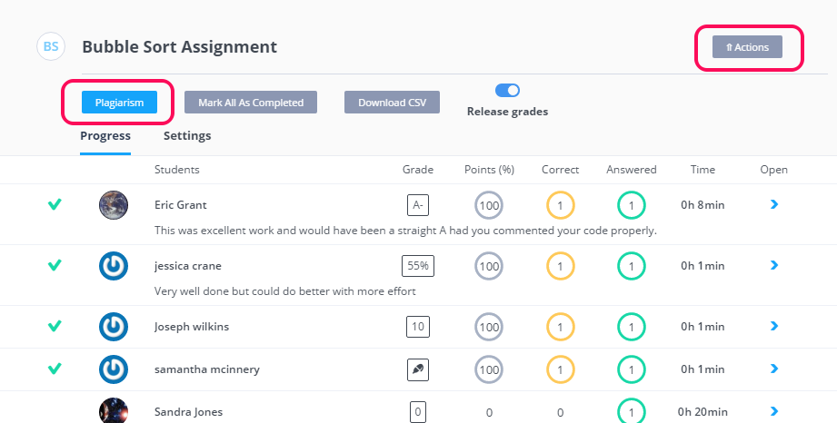
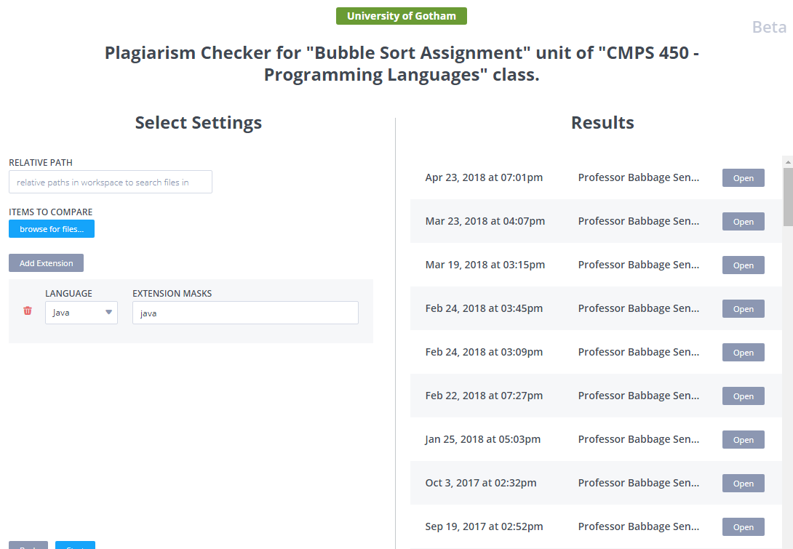
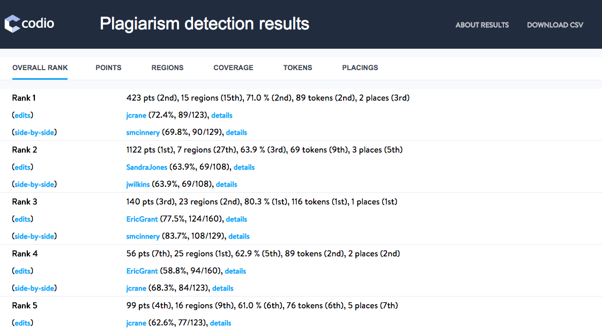
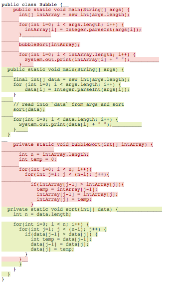
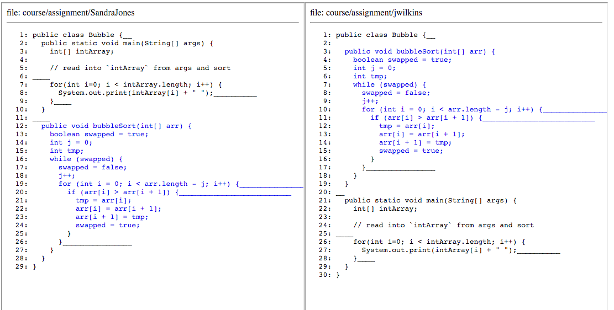

Plagiarism detection allows you to check for code copying and potential cases of cheating between members of a class. With the current version, Codio will compare the code projects of all students within a class for a specific teaching unit.
If you want to include other reference code to include in the cross comparison, then you will need to create a dummy student account, add that dummy student to the class and upload the reference code as that student for that unit.
Plagiarism detection is best used with programming project units rather than Codio authored projects. It will work in both cases but it is really designed to test general coding projects rather than lots of auto-graded assessments within a unit.
Codio does not determine whether cheating has or has not taken place and leaves the decision making up to you.
To run the Plagiarism checker you need to first select the Unit within the class and then press press the actions button next to the unit name.

Classes
In order to use this feature you need to set up a class. If you are not using Codio as your main IDE and want to use only the plagiarism detection feature then you should still follow these instructions and ask your students to upload their code into the project using Git or by uploading files manually.
Access Plagiarism features
When in your class, select your unit and then click the Actions button (button to the top right of the screen) to show the available actions that includes Plagiarism
Run
You can see the Plagiarism button near in the upper part of the screen. When you press this you are taken to the following screen.

This screen will show you any plagiarism reports that were run in the past. You can open these if you wish.
On the left you can:
- enter a relative path in the workspace to check.
- upload items to compare against (e.g. previous years information).
- restrict the file types that should be checked. It is possible to add multiple file types by pressing the Add Extension button.
These filters can be useful to avoid generating unnecessary noise in your report.
Once you are ready to run a new report, press the Start button, which will package up all the files and pass them to the detection engine. You are free to leave the screen at this point and return to it later to see whether the report has been generated.
Codio will include all code from all students in the report, irrespective of whether the assignment is marked by the student as completed.
The report
Once the report has been generated it can be opened by clicking the Open button. A typical report is shown below. The interpretation of the report is explained below.

Drilling down
You can drill down in various ways. The two most common and useful ways are
Edits
Shows the differences between the two or more students with similarities. Things that have been added by one student are shown in green, things removed in red and those that are identical are not shaded at all.

Side-by-side
This shows the code of those students with similarities in their code in a side-by-side viewer.

Downloading raw data
Should you wish to analyse the report data in other software tools, Codio allows you to download a CSV file of the report output. You will find a button Download CSV located at the top right of the main report screen.
Main report results
The main report output is a ranking of the submissions. Several metrics are used, and then an overall rank is produced for each entry. The top line for each entry shows its overall rank as well as the score on each metric. Next to the score is the ranking within that metric.
The metrics are
- Points - every incidence of matching text generates some number of points, and the points metric shows the cumulative score for these entries.
- Regions - counts how many distinct regions (of some maximum size) had matches.
- Coverage - on average, what fraction of the overall text consisted of matching regions.
- Tokens - how many words (in absolute numbers) were found in the matching regions.
- Placings - a weighted average of the other ranks, which is similar to the overall rank, but can sometimes reveal differences.
The other items for each entry are:
- File names - links are provided to the individual files in a match. Next to each file is shown its individual coverage and the number of suspicious tokens out of its total token count.
- Edits - highlights the changes between the two files. This is mostly useful when large portions of the files are similar.
- Side-by-side - the matching files (limit 3) are shown side by side, to make comparison easier
Individual Files
The plagiarism detection works by trying to identify "rare matches," sequences of words that are similar only in a small number of files. In general, the more rare matches two files have in common, the more suspiciously they are viewed.
To convey information about the rare matches, the reports use size, color, and hover text. When you view a file, either individually or side-by-side, you will see that some portions of it are colored, and that the font size changes. Anything colored is a rare match - words that matched between these two (or more) files, but were otherwise rare in the rest. So, to a first-order approximation, the more colored text, the more suspicious similarities.
Clicking on a colored region in a side-by-side view should bring up the matching region for the other file. In the case that multiple matches exist, the first match may be shown. In rare cases, the corresponding match may be hidden by other matches, so alignment may not occur. The match still exists and is real, but because of presentation decisions, may have become hidden.
Size is based on how many files had the rare text. The fewer files that had the rare text, the larger the font size. The largest font is used when only two files have a piece of matching text. If you hover the mouse over a word, you'll get a pop-up showing the type of match and how many files were involved.
The red region typically tries to indicate the "anchor" text, the shortest sequence that was rare in a particular match. So, if two students had the same misspelling in an otherwise common sentence, the misspelled words would show up as red, indicating they were the core of the match. However, the entire sentence around them would also be unique because of the misspellings, so the rest of the sentence would be blue. If there are multiple, overlapping anchor regions, additional words may appear in purple next to the red region. Hovering over a word will show an actual match in which the word was involved. Words can be involved in many matches.
There are actually many types of matches. If you hover over any text, you'll also see a parenthetical comment that indicates the type of match.
- Text/case/space match - the text in the region matched, including the case of the text and the spacing. The only differences may be in punctuation that is considered unimportant.
- Text/case match - like the text/case/space match, but without match on the spacing.
- Text match - the text matches (again, modulo punctuation), but the spacing and case may differ.
- No-comment match - once the comments have been removed, the text matches (again, modulo punctuation), but the spacing and case may differ.
- Text reordered - the same set of words appears in the files, but there's some change in the order of the words
- No-comment reordered - once the comments have been removed, the same set of words appears in the files, but there's some change in the order of the words
- Structure/space match - the same structure appears in the files, with matching spacing, but the variables/functions may have different names.
- Structural match - the same structure appears in the files, but the variables/functions may have different names.
- Structure reordered - the same structure appears in the files, in a different order, and the variables/functions may have different names.
Codio also highlights trailing whitespace at the ends of lines. When two files match in trailing whitespace, it is often the case that they were copied electronically since trailing whitespace is not normally visible when reading text from a screen or in printouts.
Interpreting Matches
Not all rare matches indicate plagiarism, and it is important to use good judgment to determine whether a result identified by Codio is actually suspicious. In general, it is a good idea to use the side-by-side examination and start at the top-ranked files, working downward until you encounter a series of files that you determine are not actually suspicious.
When examining files, it is often good to find the corresponding places in two files and see if the differences appear to be coincidental or if it looks like the differences are more than chance. For example, sometimes, two students may have a large block of text highlighted, and this may stem from copying a project description from a course page but making similar grammatical changes. In other cases, students may have very few rare matches scattered in their code, but the matches may come from things like similar words in comments, which are much less constrained than code. In all cases, it is imperative that human judgment is used to determine whether a match from Codio represents plagiarism or not.
Note that Codio will not necessarily find all plagiarized text. In particular, it focuses on only rare matches, so if two students have copied code that is very constrained and very similar to other solutions, it will not be detected. However, if there are very few ways to write a solution to the problem, any plagiarism detection will be difficult. In such cases, plagiarized code may show only a few rare matches, which is why human judgment is so important in interpreting the results.